As seen on Kill Tony
Chris
Longoria
Stand-up comedian, podcast host and live comedy producer from Corpus Christi, Texas
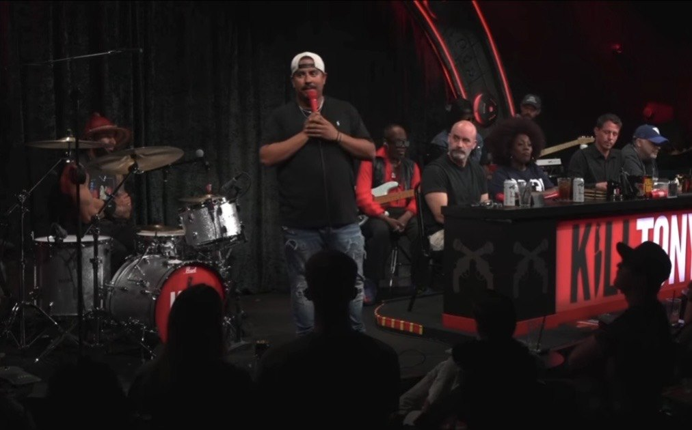
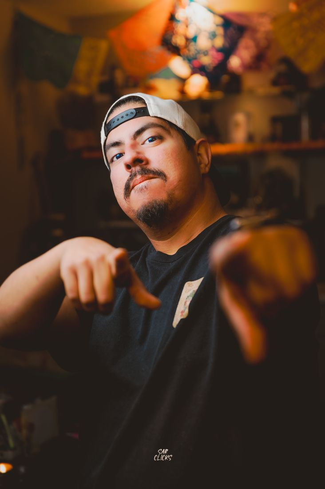
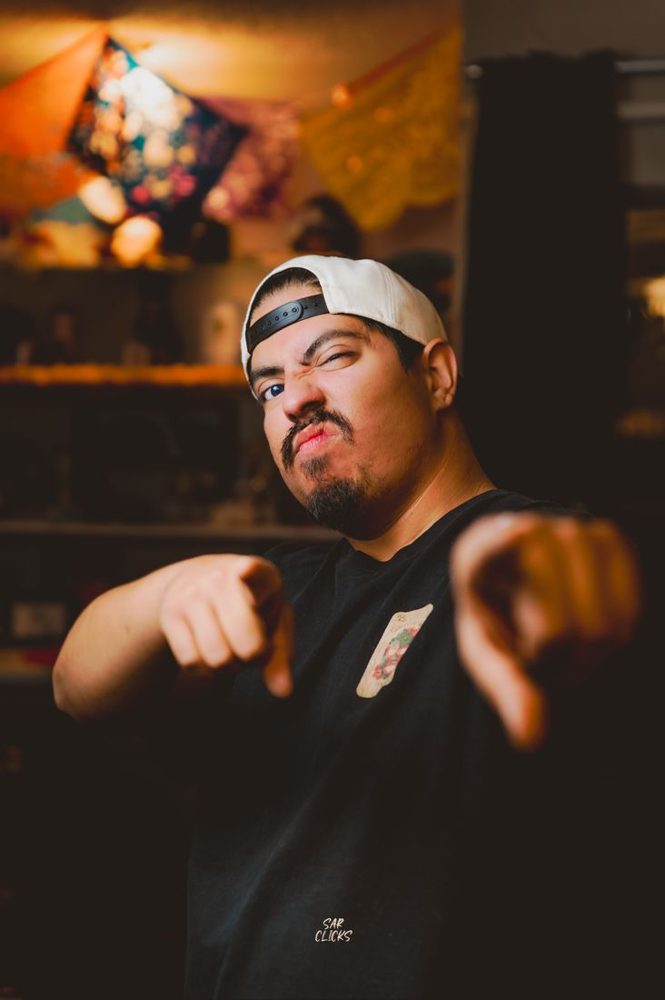
About Chris
Chris Longoria is a stand-up comedian, podcast host, and live comedy producer from Corpus Christi, Texas. A familiar face on the Texas comedy scene, Chris has built his career by performing, producing shows, and creating opportunities both onstage and behind the scenes.
In 2026, Chris appeared on Kill Tony twice, taking the stage for episodes #770 and #777. He has performed at some of the biggest comedy rooms in Texas, including Comedy Mothership, Houston Improv, and Hyena’s Comedy Club in Dallas and Fort Worth, and has shared the stage with comedians including Steve-O.
Over the course of his career, Chris has performed with the likes of Martin Moreno, Hooter Moreno, Uncle Lazer, Heath Cordes, Ellis Aych, Jon “Polar Bear” Gonzalez, Mario “Superstar” Salazar, Raymond Orta, and Raul Sanchez, among many other comedians and entertainers.
Chris is also the host of That Dude Talks, a podcast featuring conversations with comedians, professional wrestlers, entertainers, and other interesting personalities. Past guests have included professional wrestlers Sammy Guevara and Tay Melo.
Back home in Corpus Christi, Chris is the creator and host of Kiko’s Comedy Nights, a monthly live comedy series bringing established touring comedians and rising talent to the Coastal Bend. What started as a local comedy show has become another part of Chris’s mission to grow the comedy scene in South Texas.
Whether he’s performing stand-up, hosting a podcast, or producing a show, Chris Longoria is focused on one thing: creating memorable comedy experiences and continuing to build something bigger out of the Texas comedy scene.
On Kill Tony
Two sets on Kill Tony. Each video starts right where Chris takes the stage.
Kill Tony #777
On Stage
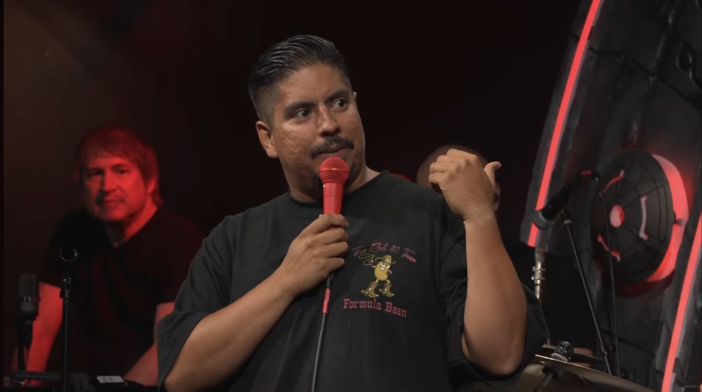
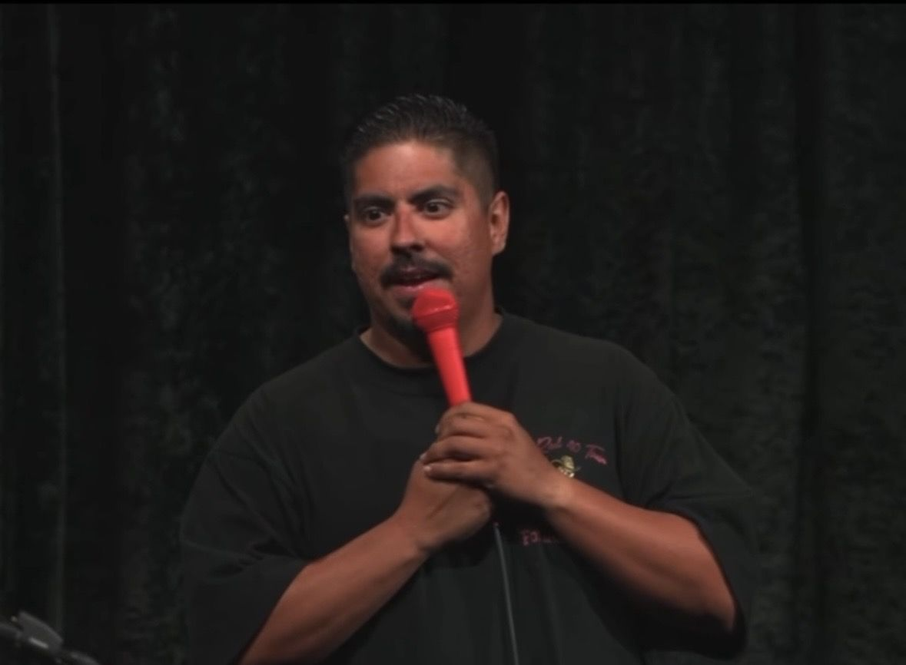
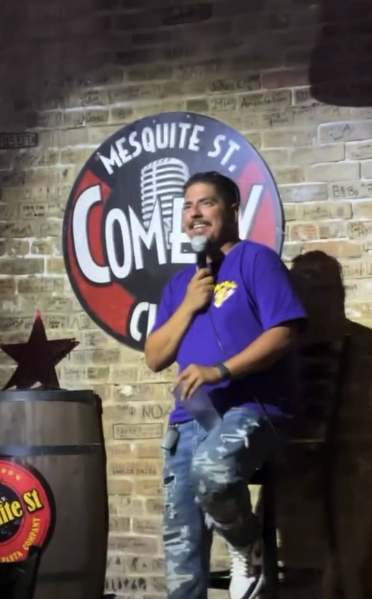
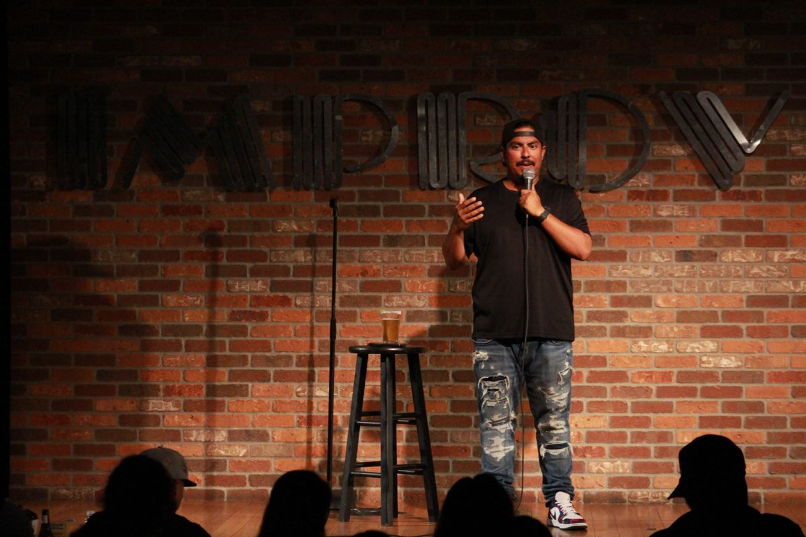
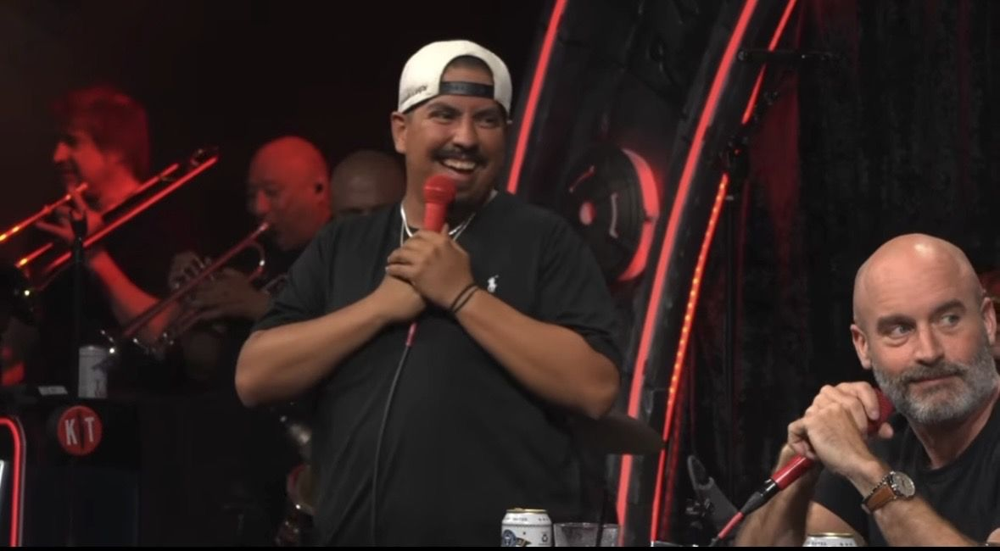
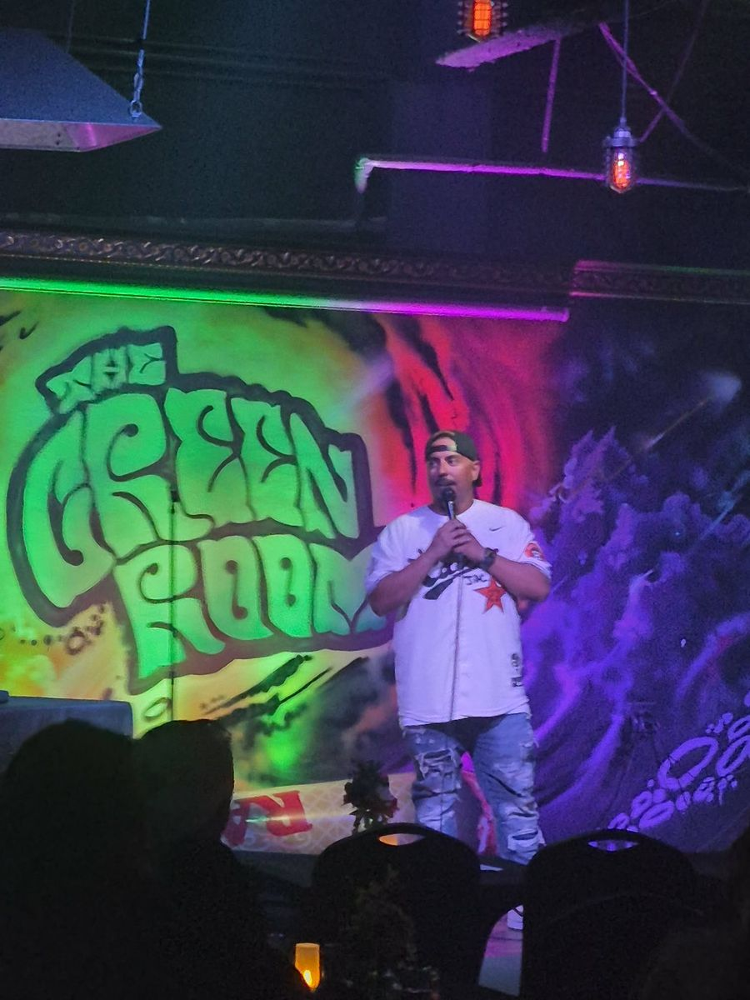
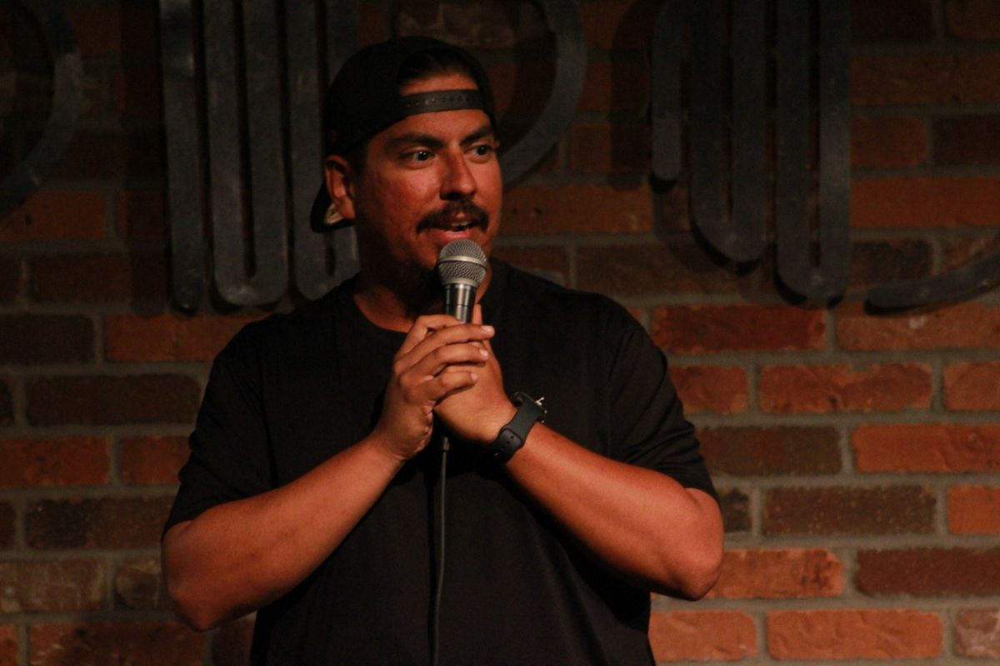
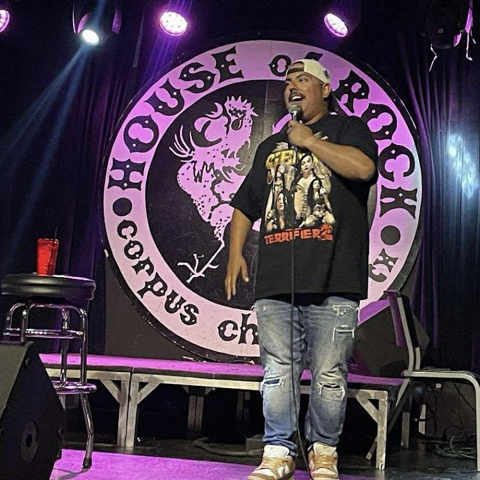
Shows
Monthly
Kiko's Comedy Nights
Created and hosted by Chris, with touring comedians and rising talent, at Kiko's Mexican Food Restaurant & Cantina, 5514 Everhart Rd., Corpus Christi
Sponsored by Belleeah's Apples & Treats
Never miss a show. Follow Chris for new dates:
That Dude Talks
Chris's podcast: friends, comics and the occasional pro wrestler, talking about whatever comes up.
Ep. 12: A Guevara Family Takeover, with Sammy Guevara, Tay Melo and Luna


FAQ
Who is Chris Longoria?
Chris Longoria is a stand-up comedian, podcast host, and live comedy producer from Corpus Christi, Texas.
Has Chris Longoria been on Kill Tony?
Yes. Chris appeared on Kill Tony twice in 2026, on episode #770 (May 18, 2026) and episode #777 (July 21, 2026). Both sets are above.
Where has Chris Longoria performed?
Chris has performed at some of the biggest comedy rooms in Texas, including Comedy Mothership, Houston Improv, and Hyena’s Comedy Club in Dallas and Fort Worth.
What is That Dude Talks?
That Dude Talks is Chris's podcast, featuring conversations with comedians, professional wrestlers, entertainers, and other interesting personalities. Past guests have included Sammy Guevara and Tay Melo. Episodes are on YouTube.
What is Kiko's Comedy Nights?
Kiko's Comedy Nights is a monthly live comedy series in Corpus Christi, created and hosted by Chris, at Kiko's Mexican Food Restaurant & Cantina on Everhart Road.
How do I book Chris Longoria?
Email tdcdoescomedy@gmail.com with your date, venue, and details.
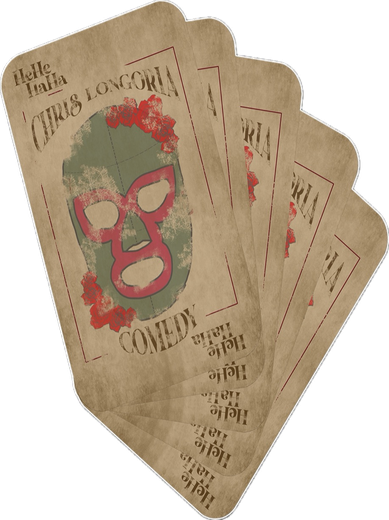
Book Chris
Stand-up sets, hosting and producing shows. Send your date, venue and details to tdcdoescomedy@gmail.com.